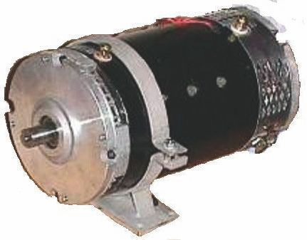
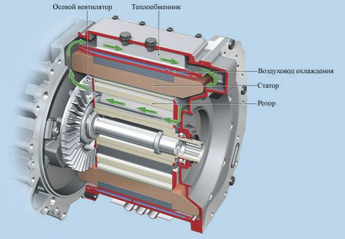

Электродвигатели для электромобилей.
Характеристиками электромобилей являются не только показатели мощности, крутящего момента, но и частота вращения, ток и напряжение. Поскольку от этих данных зависят передвижение и обслуживание техники. И тем не менее электродвигатель – устройство, которое занимается преобразованием электроэнергии в механическую, – в последнее время он все сильнее популяризируется на автомобильном рынке в качестве перспективного направления развития автопромышленности. Поэтому подробнее ознакомимся с устройством электромобиля, его двигателя, за которым будущее отрасли. Электродвигатель работает, используя принцип электромагнитной индукции.
Судя по текущим тенденциям, мировые лидеры автомобильной промышленности, политики и другие влиятельные лица всерьез взялись за то, чтобы развивать отрасль производства электрических автомобилей. Это видно по регулярно внедряемым нормам, которые постоянно повышают планку по выбросу максимального уровня вредных газов в атмосферу, и по мощной рекламной кампании, которая развернулась в медиапространстве в поддержку такого типа транспортных средств. В развитых странах с каждым годом растет количество заправочных станций, обеспечивающих зарядку электромобилей.
Поэтому открываются большие возможности инженерам для развития отрасли. И для этого есть два основных направления – адаптировать серийные автотранспортные средства или вести разработку новых моделей. Конечно, менее затратным мероприятием является усовершенствование существующих моделей.
Одно из перспективных направлений вполне осваивается – европейские специалисты занимаются улучшением нынешних гибридных двигателей, в то время как японские компании занялись совершенствованием обычного двигателя. Им удалось увеличить степень сжатия. При этом состав топлива остался неизменным. В свою очередь, немецкие разработчики установили небывалый рекорд. Созданному электромобилю удалось проехать без подзарядки целых 600 км. Для автомобилей с ДВС это не показатель, однако электромобили могут похвастаться теперь и такими возможностями. Дело в том, что даже Tesla, ведущий участник рынка, пока не создал легкий аккумулятор, который смог вытянуть это расстояние. А в этом случае разработчикам удалось достичь показателя в 600 км.
Автомобиль проехал расстояние между двумя немецкими городами – Мюнхеном и Берлином. Его средняя скорость передвижения по трассе составила около 90 км/ч. Установление подобного рекорда стало возможным благодаря плодотворной работе предприятия DBM Energy, которое в тесном сотрудничестве с Lekker Energie создало такое решение.
1.8.1. Принцип работы и устройство тягового электродвигателяЭлектродвигатель включает в себя статор и ротор. Вращающееся магнитное поле в статоре действует на обмотку ротора и наводит в нём ток индукции, возникает вращающий момент, который приводит в движение ротор. Электроэнергия, поступающая на обмотки мотора, преобразуется в механическую энергию вращения.
Благодаря развитию технологии электродвигатели нашли применение в разных отраслях, например автомобилестроении. Причем они способны использоваться либо отдельно, либо совместно с двигателем внутреннего сгорания (ДВС). Последний вариант – гибридные авто.
От электродвигателей, применяемых на производствах, агрегаты для автомобилей отличаются малыми габаритами, но повышенной мощностью. Новейшие разработки все больше отдаляют двигатели для автомобилей от иных устройств универсального назначения. Характеристиками электромобилей являются не только показатели мощности, крутящего момента, но и частота вращения, ток и напряжение. Поскольку от этих данных зависят передвижение и обслуживание техники.
Чтобы лучше разобраться в многообразии, которое нам дарит авторынок, стоит рассмотреть существующие виды электродвигателей для электромобилей. Их можно условно классифицировать по типу тока:
• устройства переменного тока;
• конструкции постоянного тока;
• решения универсального образца (способны функционировать от постоянного и переменного токов).
Электродвигатели переменного тока делятся на группы:
• асинхронные – скорость вращения магнитного поля статора выше скорости вращения ротора;
• синхронные – частоты вращения магнитного поля статора и ротора совпадают.
С учетом используемого количества фаз электрические устройства разделяют на: одно-, двух-, трехфазные.
Если привести реальные примеры образцов, используемые известными автопроизводителями, то хороший пример применения трехфазного агрегата асинхронного типа – Volt от Chevrolet. Он является гибридным автомобилем. Пример трехфазного синхронного двигателя – i-MiEV от Mitsubishi. А этот автомобиль является исключительно электрическим. Разумеется, у разных производителей разные двигатели, отличающиеся массой, мощностью, габаритами и прочими параметрами.
На рис. 1.11 представлен вид на силовую установку Chevrolet Volt.

Рис. 1.11. Вид на силовую установку Chevrolet Volt
Кроме рассмотренных, существует еще одна классификация – по конструкции щеточно-коллекторного узла. Такие агрегаты бывают:
• бесколлекторными (представляют собой замкнутую систему, в которую входят преобразователь координат, инвертор и извещатель положения);
• коллекторными (щеточно-коллекторный узел играет роль в такой конструкции одновременно и извещателя положения ротора, и переключателя тока в обмотках – в основном используется ток постоянной частоты).
В конструкциях электромобилей зачастую задействуются коллекторные моторы, хотя есть примеры и с иными моделями. Как вариант – автомобиль «Санрейсер», в котором установлен как раз бесколлекторный двигатель от компании General Motors. При массе 3,6 кг его КПД составляет 92 %.
Нельзя не отметить еще один тип двигателя, который используется в некоторых современных моделях авто. Это система мотор-колесо. Пример – спорткар Volage. В такой конструкции предусмотрена возможность регенерации энергии торможения. Для этого используется тяговый двигатель Active Wheel. Он весит всего 7 кг, что позволяет добиться приемлемой массы колеса – 11 кг.
1.8.2. Система «мотор-колесо»Самой распространенной сегодня конструкцией является решение с питанием от аккумуляторной батареи. Она нуждается в регулярной зарядке, способной реализоваться за счет внешних источников, генератора в конструкции и рекуперации энергии торможения. Генератор действует от ДВС, поэтому такая схема работы уже не относится к чисто электрическим. Подобные машины называют гибридными. Об этом мы поговорим далее.
1.8.3. Преимущества и недостатки электродвигателейВыделим достоинства электрических агрегатов:
• высокий коэффициент полезного действия – до 95 %;
• компактность, малый вес;
• простота использования;
• экологичность;
• долговечность;
• создается максимальный показатель крутящего момента на любой отметке скорости;
• воздушное охлаждение;
• способны функционировать в режиме генератора;
• не нужна коробка передач;
• возможность рекуперации энергии торможения.
В качестве примера удачной разработки модели с высокими характеристиками можно привести мотор от Yasa Motors. Инженеры компании создали агрегат, который при весе 25 кг способен выдавать до 650 Н-м крутящего момента. Этот двигатель в разрезе представлен на рис. 1.12.
Что касается недостатков непосредственно электродвигателя, то их нет. Больше вопросов вызывает питание агрегата, что, собственно, и тормозит распространение, широкое использование технологии. Поэтому на данный момент большей популярностью пользуются гибридные авто, нежели электромобили. Благодаря такой схеме увеличивается запас хода, позволительно использовать менее мощные и дорогостоящие аккумуляторные батареи.

Рис. 1.12. Электродвигатель в разрезе